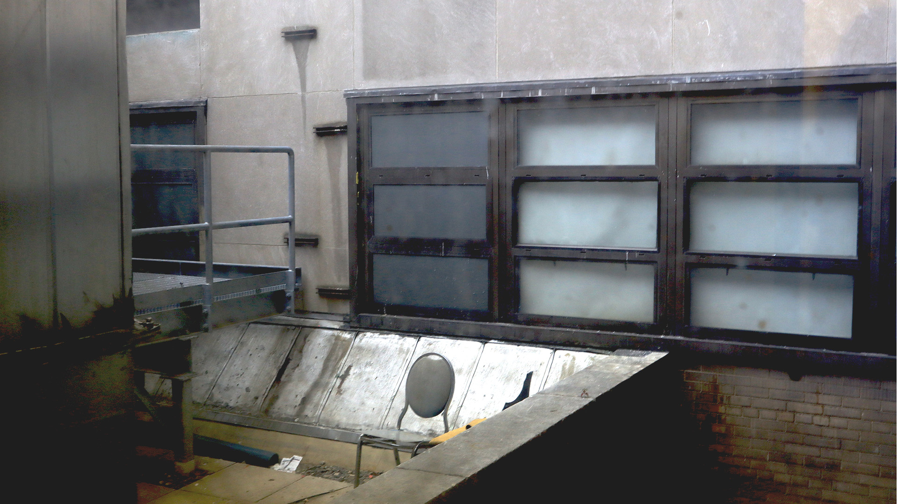

Here is the first image for Homework 2. I decided to take this image because while we were exploring the seemingly endless walkways Hunter has we stumbled upon this isolated and curious chair alone on a balcony. It was intriguing and we couldn't help but wonder why it was there all alone, was it someone's hide out or had it just been abadoned over the years. I wanted to capture a small bit of that curiosity with my image. I edited the exposure, curves, and saturation in order to create a more rustic look, like a weathered down page of an old photograph your dad would have in his drawer. I did this by increasing the exposure but lowering the levels and focusing more on the blue hues of the image.:
